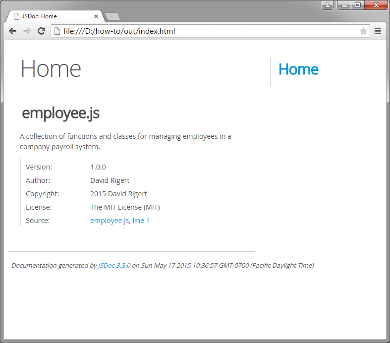

Every source code file should begin with a header block that provides an overview of what the file contains and the author of the file. You can also optionally include information such as a copyright notice, the file version, and license information.
Suppose you wrote a JavaScript front end for a company payroll system. One of the files might be a collection of classes and functions related to managing the various employees in the system. We will write the following comment block at the beginning of a new file and save it to our hard disk as employee.js.
/**
* @file A collection of functions and classes for managing employees in
* a company payroll system.
* @author David Rigert
* @version 1.0.0
* @copyright 2015 David Rigert
* @license The MIT License (MIT)
*/Open a command prompt window in the directory where you saved the employee.js file and type jsdoc employee.js to convert the file to HTML. By default, the JSDoc 3 toolkit generates the HTML documentation in an out directory off of the current working directory. Open the index.html file in your web browser to view the documentation.
As you can see below, a formatted line was added for each of the block tags included in the comment. Notice that the order of the information in the HTML does not necessarily match the order of the block tags in the comment. You can click the filename link under Source to view the source code that was used to generate that part of the documentation. The layout, style, and content of the HTML can be customized by creating a JSDoc configuration file or by creating a custom template, but this is beyond the scope of this tutorial.
